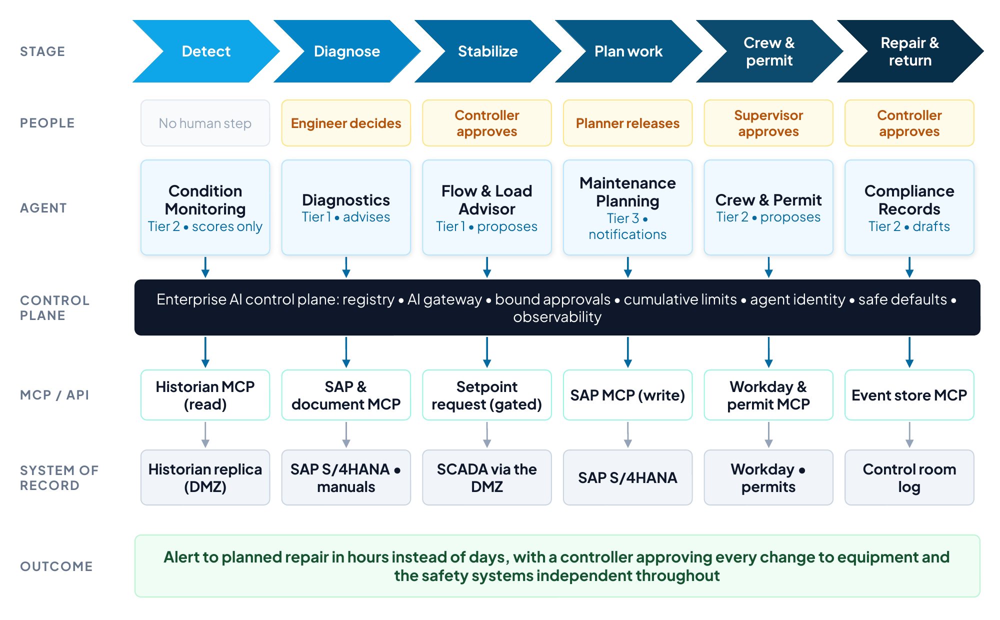
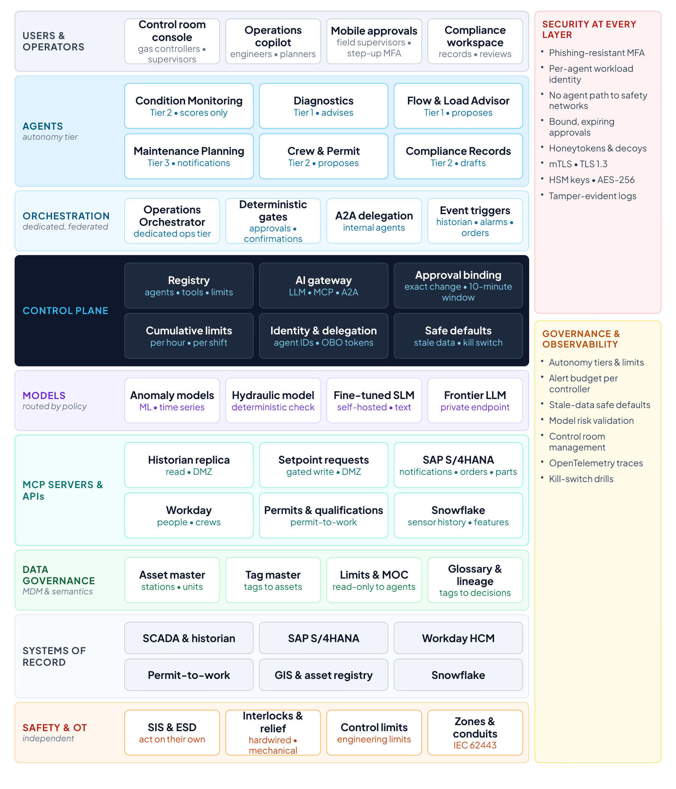
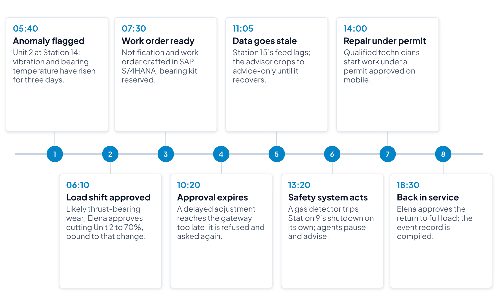
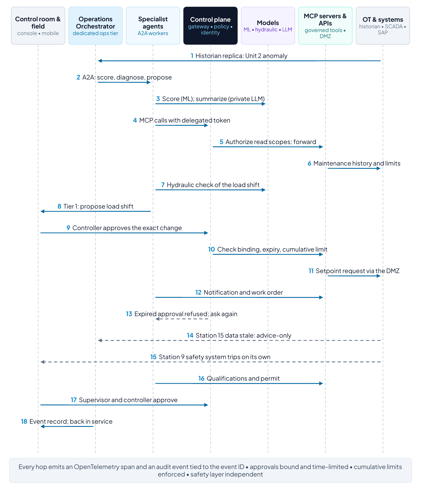
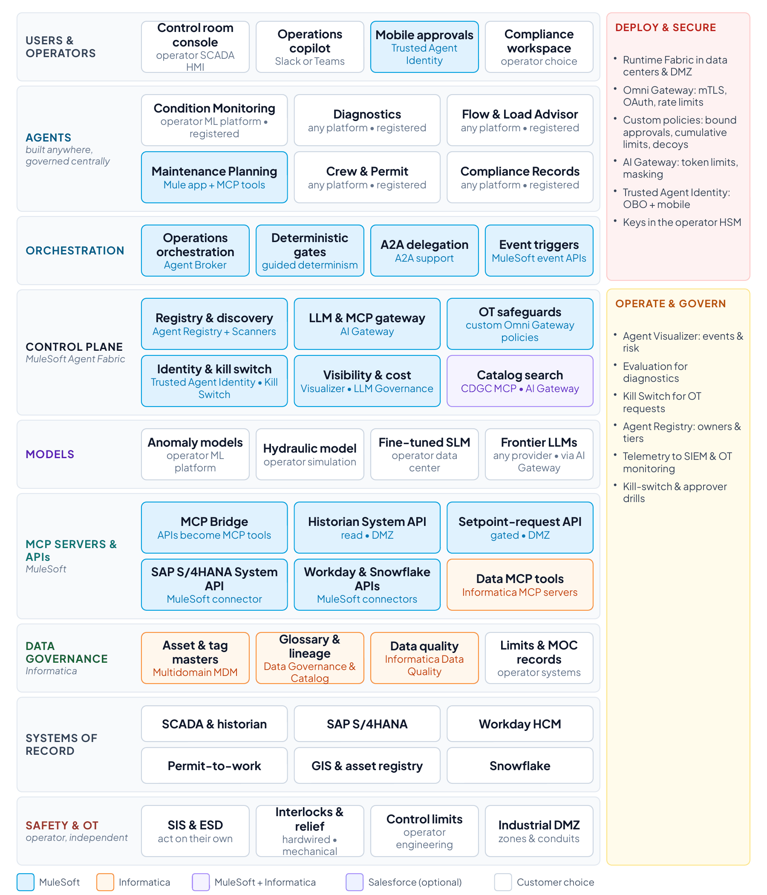

Section 13
Reference use case 3: Energy pipeline compressor reliability
This reference use case applies the architecture to operational technology: a natural gas transmission operator detecting, diagnosing and fixing compressor problems before they force unplanned outages. It is the case where an agent’s action can reach physical equipment, so it adds the safety architecture from Section 5 to the reference design. As in use cases 1 and 2, the architecture is vendor-neutral except for the transactional platforms named (SAP S/4HANA for maintenance and inventory, Workday for workforce records and Snowflake for sensor history and analytics), and control systems, historians and safety systems are described generically. The pattern carries over to power utilities and to upstream and downstream oil and gas. The final subsection shows how MuleSoft and Informatica realize the design.
Overview
Compressor stations keep gas moving through a transmission pipeline, and an unplanned unit outage forces a choice between running the remaining units harder, cutting interruptible service or, at worst, missing firm deliveries. Most operators already stream vibration, temperature and pressure data into a process historian, but turning an early warning into a planned repair still takes days of manual work across the control room, reliability engineering, maintenance planning, field operations and compliance.
The work also sits under specific rules. Under the US control room management rule, gas controllers need clearly defined authority to act, adequate information, limits on fatigue and managed alarm loads.105 Operators of critical pipelines must segment operational technology from IT networks, control access and monitor continuously under the Transportation Security Administration’s security directive.106 Current guidance also holds that people remain responsible for functional safety and that AI should not actively control OT without a human in the loop.67 The agentic layer in this use case respects all three. Agents watch, diagnose, plan and prepare, people with authority approve every change that reaches equipment, and the independent safety systems act on their own.
- Trigger: an anomaly on a compression unit (vibration, temperature, pressure or efficiency drift) detected in historian data, or an alarm raised in the control room.
- End state: the unit repaired and returned to service under an approved work order and permit, with flows re-balanced within limits and every decision recorded.
- Users: gas controllers and shift supervisors, reliability engineers, maintenance planners, field technicians and their supervisors, and compliance.
- Out of scope: control logic and safety instrumented systems and their setpoints, which stay under the operator’s process-safety and management-of-change procedures.

Business case and expected outcomes
Illustrative for an operator with 40 compressor stations and about 150 compression units, about 1,200 anomaly events a year and 36 unplanned unit outages a year. Replace with the operator’s baseline.
| Value lever | How the solution delivers it | Illustrative annual value |
|---|---|---|
| Unplanned outages avoided | Earlier detection and planned repairs cut unplanned unit outages by about a third | 12 fewer outages × about $180,000 each (emergency repair premium, overtime and lost interruptible revenue) ≈ $2.2M |
| Engineering and planning capacity |
| 1,200 events × 6 hours × $115 ≈ $0.8M |
| Firm service protected |
| Operator-specific, and often the largest lever where outages constrain firm transportation |
| Emissions and safety |
|
|
- Fewer unplanned outages and emergency repairs, and more repairs done in planned windows.
- Controllers who see fewer, better alerts, with the information they need to act.
- Complete, reviewable records for control room management and incident reviews.
- A reusable pattern for bringing AI into operational technology without weakening the safety case.
Key performance indicators
Baselines below are illustrative and should be measured during discovery.
| KPI | Definition | Baseline (illustrative) | Target (12 months) |
|---|---|---|---|
| Unplanned unit outages | Unplanned compression-unit outages per year | 36 | 24 or fewer |
| Alert to planned work | Hours from anomaly detection to a released work order | 72 | 8 |
| Effort per event | Engineering, planning and operations hours per anomaly event | 10 | 4 |
| Work orders right first time | Released work orders needing no correction for parts, crew or permit | 70% | 95% |
| Executed as approved | Agent-originated setpoint requests executed exactly as approved and within the approval’s validity window | Not measured | 100% |
| Stale-data safe defaults | Stale-telemetry events in which agents dropped to advice-only in time | Not measured | 100% |
| Agent alerts per controller hour | Agent notifications reaching a controller, against the operator’s alarm-management limit | Not measured | Within limit |
| Time to stop agent requests | Minutes from decision to stopping all agent-originated requests to OT, in drills | Not measured | Under 1 |
| Governed AI traffic | Model and tool calls routed through the gateway | Not measured | 100% |
Solution architecture
Figure 19 shows the architecture against the same layers as the reference architecture, with one addition: a safety and OT layer beneath the systems of record, which the agents cannot reach.

Clients and channels
Gas controllers work at the control room console, where agent proposals appear next to the SCADA displays rather than in a separate chat window, and shift supervisors confirm larger changes. Reliability engineers and maintenance planners use an operations copilot. Field supervisors approve permits and work orders on mobile, again with step-up authentication, and compliance staff review records in a case workspace.
Agents and autonomy tiers
| Agent | Responsibility | MCP tools | Tier | Human role |
|---|---|---|---|---|
| Operations Orchestrator | Opens an event for each anomaly, delegates over A2A and tracks each event to closure |
| Tier 2 | Controllers and planners see the queue |
| Condition Monitoring |
|
| Tier 2, scores only | None |
| Diagnostics | Suggests likely causes from maintenance history, similar events and manufacturer guidance |
| Tier 1, advises | Reliability engineer decides |
| Flow & Load Advisor | Proposes load shifts across units and stations, checked against the hydraulic model |
| Tier 1, proposes |
|
| Maintenance Planning | Creates the notification, drafts the work order and reserves parts | SAP S/4HANA maintenance and inventory tools | Tier 3 for notifications | Planner releases the work order |
| Crew & Permit | Checks technicians’ qualifications for the covered tasks and drafts the isolation permit107 |
| Tier 2, proposes | Field supervisor approves the permit |
| Compliance Records | Assembles the event record: alarms, approvals, actions and outcomes |
| Tier 2, drafts | Compliance reviews |
Orchestration model selected
The operator runs a dedicated orchestration tier for operations, federated under the enterprise control plane. Operations data and agents stay in the operator’s own environment, close to the historian and control systems, while identity, policy, registry, audit and cost remain centrally governed. Orchestration is event-driven (historian anomalies, alarms and work-order events), with a supervisor pattern over A2A27 and deterministic workflows for anything that touches equipment. A setpoint request always needs a controller’s approval, larger changes also need a supervisor’s confirmation, and no workflow can skip either step.
Models and routing
- Anomaly models: conventional machine learning on vibration, temperature and pressure time series, trained on Snowflake history and monitored for drift under the operator’s model risk procedures. They are not LLMs.
- Hydraulic model: the operator’s existing pipeline simulation, which checks every proposed load shift against pressure, line-pack and delivery limits. Its answer is deterministic, and it has the final word over any language model.
- Fine-tuned small language model: self-hosted, it reads alarm text, maintenance history and work-order notes and drafts notifications and permits.
- Frontier model: on a private endpoint with zero data retention, it summarizes diagnostics and manufacturer guidance for engineers. Nothing it produces reaches equipment without passing the hydraulic check and a controller’s approval.
- Routing policy: operations and asset data stay on private models unless masked. Each step has a latency budget, and any advice based on data that has since gone stale is discarded.
Control plane and policy
The control plane components match use cases 1 and 2, with approval binding, cumulative limits and safe defaults added to the policy set:
- Agents may propose setpoint changes but never execute them. A request executes only if a controller approved that exact change, the approval is less than ten minutes old by the gateway’s clock, and changes above a threshold carry a shift supervisor’s confirmation as a separate attester.
- Total flow re-allocation across stations is capped per hour and per shift, across agents and sessions, so many small approved changes cannot add up to a move the hydraulic model has not checked.
- If a station’s historian feed is more than 60 seconds old, the Flow & Load Advisor drops to advice-only, pending requests are voided and the controller is told why.
- No agent tool can read or write safety logic, bypass an interlock or acknowledge a safety alarm, and no agent traffic reaches the safety network.
- Agent notifications to a controller stay within the operator’s alarm-management limits, and any beyond those limits wait in the queue.
MCP servers, APIs and systems of record
Historian and SCADA data reach agents through a read-only replica in the industrial DMZ. The only write path into operations is a setpoint-request service in the DMZ, and the control system accepts a request only after the controller approves it at the console, still enforcing its own engineering limits. On the business side, SAP S/4HANA holds maintenance notifications, work orders, bills of materials and inventory, and Workday holds workforce records. The qualification and permit-to-work systems supply certifications and permits, GIS and the asset registry locate equipment, and Snowflake keeps sensor history and model features. MCP tools give agents narrowly scoped read tools and a small set of gated write tools.
Asset data and semantics
Equipment data helps an agent only when it is tied to the right asset, so master data is on the critical path here too:
- Asset master: one record per station, unit and major component, with the functional locations and equipment hierarchy shared by SAP S/4HANA, GIS and the historian.
- Tag master: every historian tag mapped to its asset, unit of measure and normal operating range, so an anomaly on a tag is an anomaly on a known machine.
- Limits and setpoints: engineering limits with their management-of-change history, which agents can read but never change.
- Workforce and qualifications: Workday remains the system of record for people, and qualification records say who may perform which covered task.
A shared glossary gives agents, engineers and reports one meaning for terms such as unit, station, trip, outage and line pack, and lineage shows which tags and records drove each diagnosis and proposal.
Security at every level
The same zero-trust baseline applies as in use cases 1 and 2,90 with controls specific to operational technology that follow the ISA/IEC 62443 zone-and-conduit model and NIST’s guide to OT security:68,69
| Layer | Controls |
|---|---|
| Users |
|
| Agents |
|
| Zones and conduits |
|
| A2A | |
| MCP |
|
| Models |
|
| Data |
|
| Safety layer | Safety instrumented systems, emergency shutdown and interlocks independent of the agent path, under process-safety and management-of-change procedures66 |
| Decoys |
|
Governance and observability
Operations owns the autonomy tiers, limits and alert budget, while process safety owns the safety layer and every engineering limit. Model risk validates the anomaly models and the language models, and the control room management program covers the new displays, alarms and training.105 Dashboards show events by station and cause, alert load per controller, approvals executed within their validity window, safe-default events, policy blocks and model drift, all built from OpenTelemetry traces94 tied to an event ID.
Elena’s day in the control room
Elena Morales is a senior gas controller on the day shift. The timeline follows an illustrative day (Figure 20).

At 05:40 the condition-monitoring agent flags Unit 2 at Station 14: vibration and bearing temperature have been rising for three days, and the anomaly score has crossed its threshold. By 06:00 the diagnostics agent has matched the pattern to two earlier thrust-bearing failures on the same model of unit and recommends an inspection within 24 hours at reduced load. At 06:10 the flow advisor proposes cutting Unit 2 to 70% and picking up the flow at Stations 13 and 15, and the hydraulic model shows deliveries and pressures stay within limits. Elena reviews the proposal next to her SCADA displays and approves it. Because the change is below the threshold for a supervisor’s confirmation, it executes within its ten-minute window.
At 07:30 the planning agent has created the notification and drafted a work order in SAP S/4HANA with the bearing kit reserved at the regional warehouse, and the planner releases it at 08:15. At 10:20 a second adjustment waits too long in the queue while Elena handles a shipper’s call. When it reaches the gateway its approval has expired, so the gateway refuses it and the advisor asks again with fresh values. At 11:05 the data feed from Station 15 falls more than a minute behind, so the advisor drops to advice-only until the feed recovers nine minutes later, voiding a pending request and telling Elena why. At 13:20 a gas detector at Station 9 trips the station’s emergency shutdown. The safety system acts on its own, and the agents pause requests for that segment while the advisor offers a re-balancing plan as advice and the records agent opens the event record. At 14:00 two technicians whose qualifications the crew agent has confirmed start the repair under an isolation permit their supervisor approved on mobile. At 18:30 Unit 2 returns to service, Elena approves the return to full load, and the records agent compiles the day’s event record for review.
How the components work together
Figure 21 traces the day through the architecture, and the table explains what each component did and which controls applied.

| Time | What happens | Components and protocols | Controls applied |
|---|---|---|---|
| 05:40 | Anomaly flagged |
|
|
| 06:00 | Likely cause found |
|
|
| 06:10 | Load shift approved |
|
|
| 07:30 | Work order ready | Maintenance Planning agent creates the notification, drafts the order and reserves parts through SAP S/4HANA tools |
|
| 10:20 | Approval expires | A delayed request reaches the gateway after its approval has expired |
|
| 11:05 | Data goes stale |
|
|
| 13:20 | Safety system acts |
|
|
| 14:00–18:30 | Repair and return |
|
|
Realizing the use case with MuleSoft and Informatica
As in use cases 1 and 2, MuleSoft Agent Fabric provides the control plane and the governed paths into the operator’s systems, and Informatica provides the data foundation, while the operator keeps its control systems, historian, safety systems, models and agent frameworks (Figure 22). The OT safeguards come from custom Omni Gateway policies (Section 7).
| Reference component | MuleSoft or Informatica capability | Role in this use case |
|---|---|---|
| Registry | Agent Registry and Agent Scanners (MuleSoft Agent Fabric) | Registers operations agents and agents embedded in vendor platforms, with owners, tiers and limits21 |
| Orchestration | Agent Broker with guided determinism (MuleSoft Agent Fabric) | Event-driven routing with fixed gates: no setpoint request without a controller’s approval, no large change without a supervisor21 |
| AI gateway |
| One policy point for LLM, MCP and A2A traffic: routing, masking, token limits, mTLS and OAuth21,78 |
| OT safeguards | Custom Omni Gateway policies: Approval-to-Execution Binding, Cross-Session Aggregate-Risk Gate, decoy and honeytoken policies |
|
| Agent identity | Trusted Agent Identity (MuleSoft Agent Fabric) | On-behalf-of actions with mobile approval for permits and the return to service21 |
| Operate and control | Agent Kill Switch, Agent Visualizer, AI cost controls (MuleSoft Agent Fabric) |
|
| MCP servers and APIs |
| Governed tools with read and write separation over existing maintenance, workforce and operations systems (confirm connector coverage)21 |
| Deployment | Runtime Fabric (MuleSoft) | Run gateways, MCP servers and agents in the operator’s data centers and industrial DMZ, close to the historian21 |
| Master data | Multidomain MDM (Informatica) | Asset, functional-location and tag golden records, which agents reach through governed APIs77 |
| Semantics and lineage | Data Governance and Catalog (Informatica) |
|
| Data quality | Data quality (Informatica) | Validate tag mappings and asset records at the point of entry and route exceptions to data stewards77 |

MuleSoft governs the agents and the paths they use and Informatica governs the data they act on, as in use cases 1 and 2. What differs this time is the boundary, since the control plane stops at the industrial DMZ, the only write path into operations runs through a controller’s bound approval, and the safety systems stay outside the agents’ reach. Confirm Runtime Fabric deployment in the DMZ and connector coverage for the historian and permit systems during planning. The custom policies are built and supported by the operator or its partner, not by MuleSoft.
Delivering in phases, with equipment last
Delivery follows the same four phases, except that nothing an agent does reaches equipment until phase 3, and even then only as a proposal that a controller approves.
| Milestone | What goes live | KPIs at the milestone | Value (illustrative) |
|---|---|---|---|
| Month 3 (phase 1) | One segment of the compressor fleet, 8 of 40 stations. Condition monitoring and diagnostics agents read the historian replica in the DMZ and advise engineers at tiers 1–2. No agent tool can reach control or safety systems. |
| About $0.4M a year (2 outages × $180,000, plus 480 engineering hours) |
| Month 8 (phase 2) | All 40 stations. Maintenance planning and crew and permit agents draft notifications, work orders and permits for planners and supervisors to release. Still no changes to equipment. |
| About $1.8M a year (6 outages × $180,000, 1,200 events × 5 hours × $115) |
| Month 12 (phase 3) | The flow and load advisor proposes setpoint changes through the DMZ. Each executes only with the controller’s approval, bound to that exact change and valid for ten minutes, within cumulative limits and stale-data safe defaults, and only after drills show that people can stop agent requests in under a minute. | All KPI targets met, including 24 or fewer unplanned outages and alert to planned work in 8 hours | About $3M a year, the full business case |
| Month 24 (phase 4): all goals met | Run rate and KPI targets sustained. The pattern extended to meter stations and other asset types under the same safety architecture. | All KPIs held at target, with every stop drill under a minute | About $3.8M cumulative by month 24 |
Values are illustrative and before platform, model and change costs. Firm service protected, often the largest lever, is operator-specific and not included. The last step, letting agents propose changes to equipment, waits for bound approvals, cumulative limits and drills in phase 3, and the earlier phases release value through earlier detection and less manual planning.